Game Development · Multilingual Localization
Tutelarius
Simulator
A narrative game created and localized into Simplified Chinese, English, and French, with multilingual UI, dialogue, asset coordination, implementation, and linguistic QA.
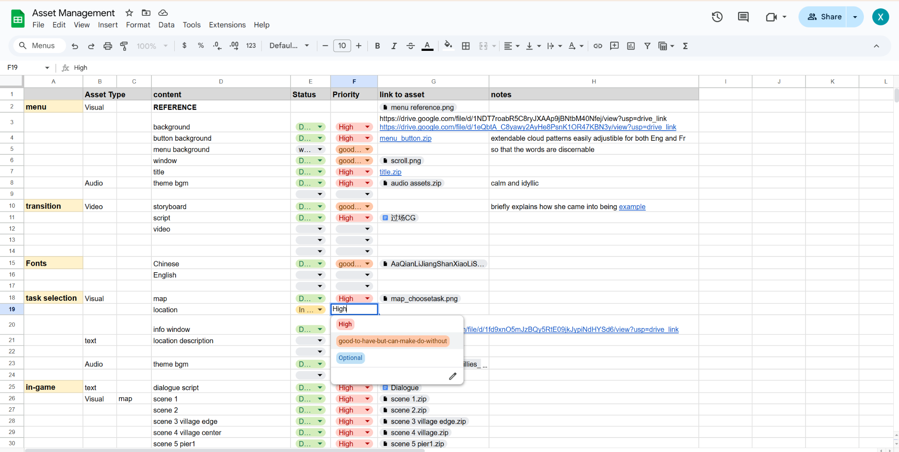
Project
Original narrative game and localization project
Languages
Simplified Chinese, English, French
Focus
UI, dialogue, implementation, multilingual QA
Tools
Unity localization tables, spreadsheets, multimedia assets
01 · Overview
Building the game and its localization together
Tutelarius Simulator was developed as a multilingual game rather than translated only after the build was complete. The project combined narrative design, asset preparation, UI planning, string management, translation, implementation, and testing.
Designing and localizing at the same time made the process challenging but rewarding. It also revealed how small technical choices—frame rate, text containers, buttons, and scene behavior—can directly affect the player experience.
02 · Planning
Asset management and production workflow
A shared asset tracker organized menus, backgrounds, fonts, scripts, audio, maps, scenes, and priorities. This helped the team see what was ready, what was still in progress, and which assets were essential for each stage of the game.
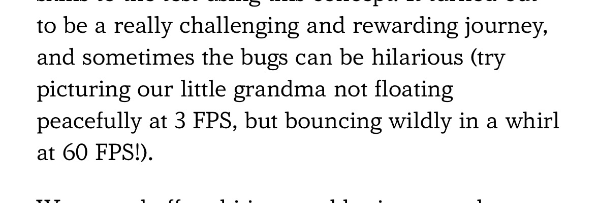
03 · Multilingual UI
One interface, three languages
The menu and pause interfaces were implemented in Simplified Chinese, English, and French. Comparing the screens side by side made it easier to identify text expansion, alignment, font, and button-size issues.
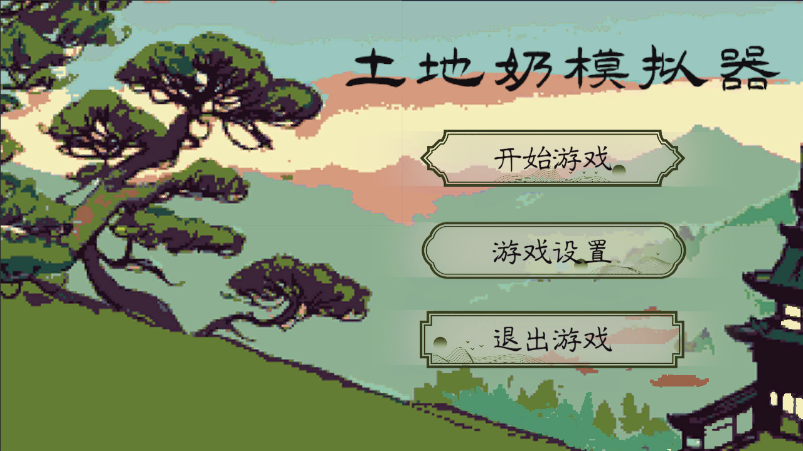
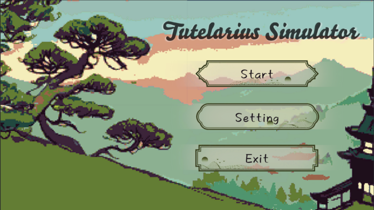
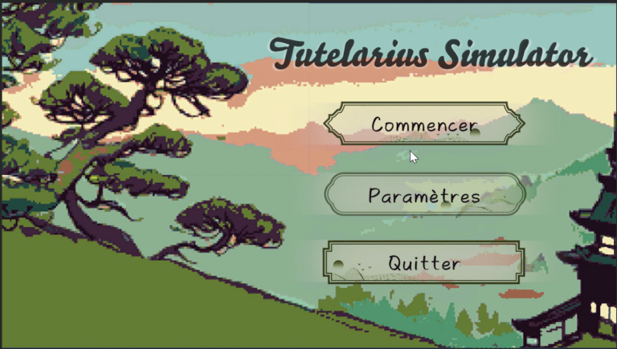
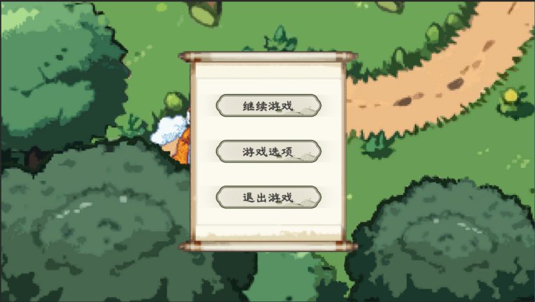
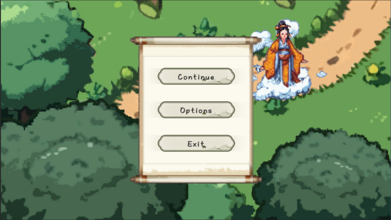
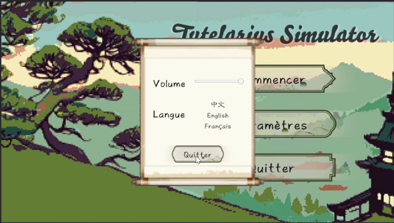
04 · Localization Engineering
Managing strings inside Unity
Unity localization tables kept the Chinese source, English translation, and French translation aligned by string key. This structure supported reusable strings across menus, location descriptions, dialogue, and choices while making later revisions easier to track.
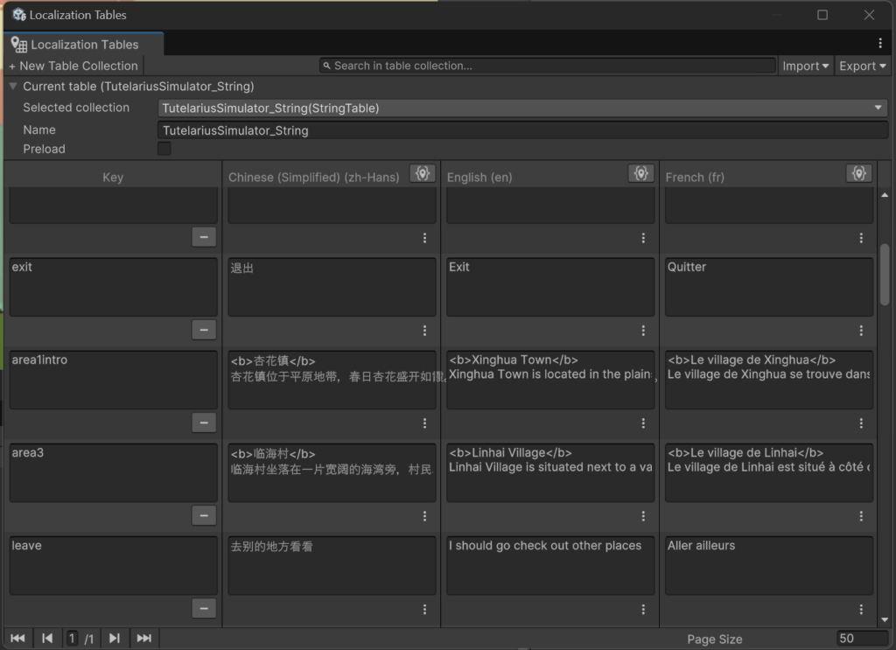
05 · Player Experience
From world map to branching narrative
The localized content appears across map descriptions, exploration scenes, dialogue, and player choices. The screenshots below show how language and interface design work together throughout the player journey.
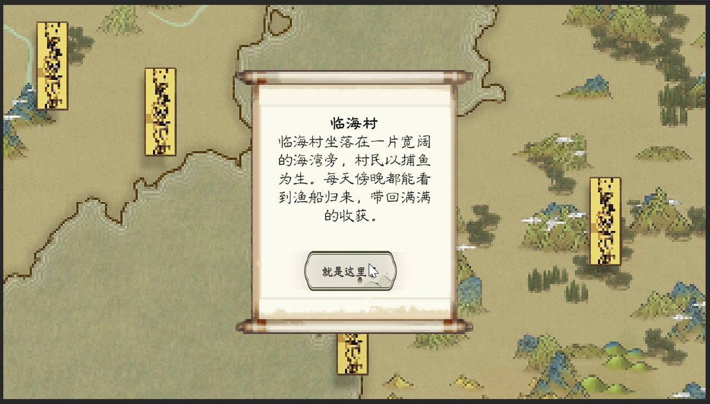
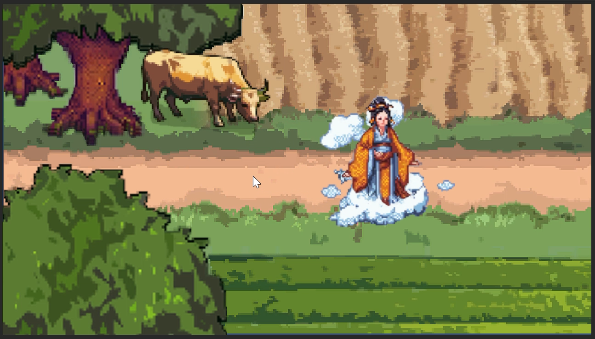
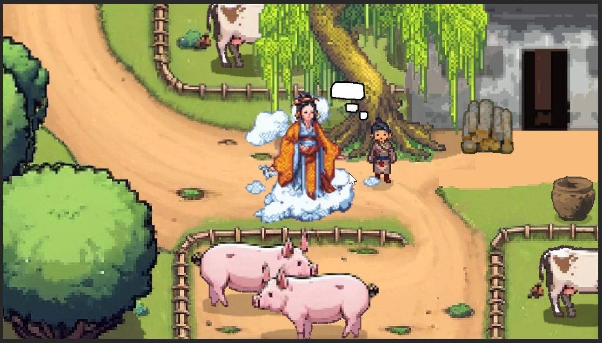
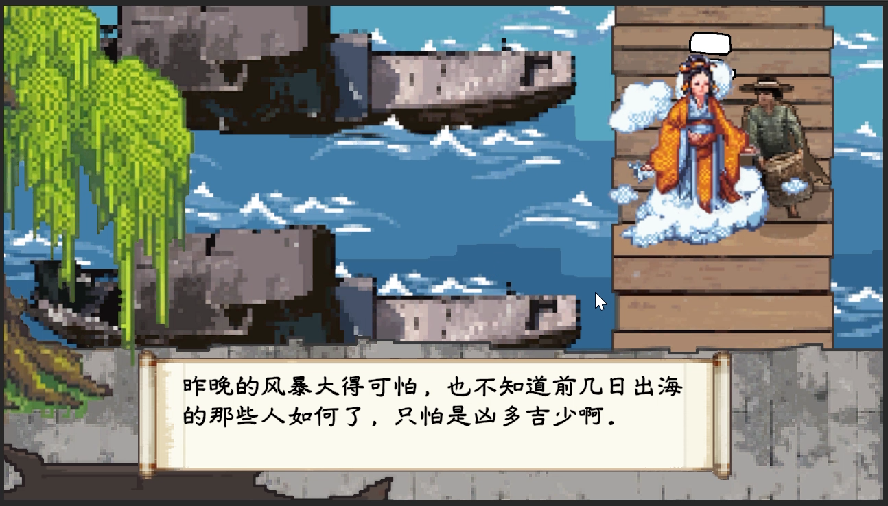
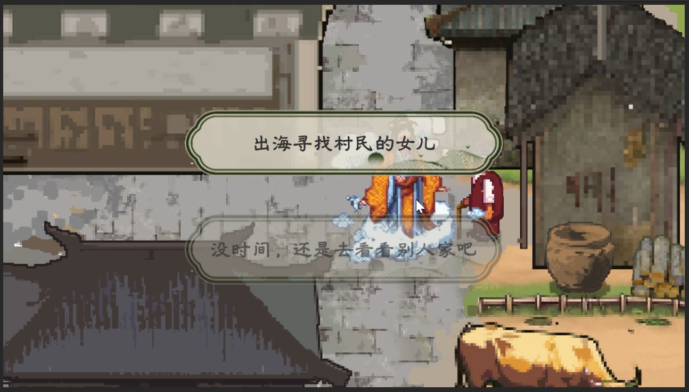
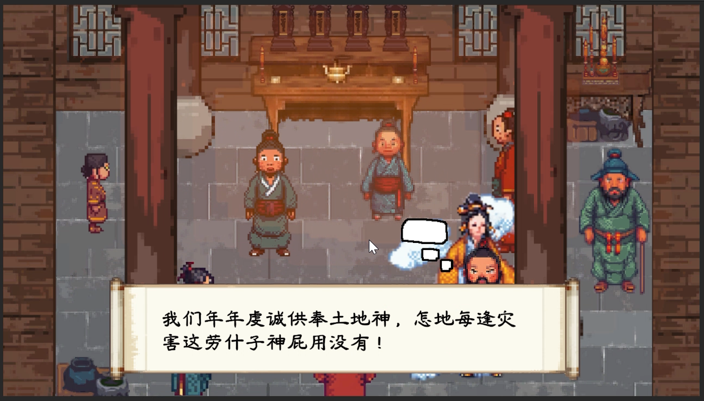
06 · Demo
Complete playthrough in three languages
If the embedded player does not load, open the full demonstration in Panopto.
View an additional project clip
07 · Reflection
Localization is part of the product, not a final add-on
This project reinforced the value of planning for localization early. Text length, fonts, buttons, dialogue containers, scene timing, and technical behavior all influenced whether the localized experience felt intentional.
It also showed the importance of testing content in context: a string can look correct in a table yet still fail when placed inside a live interface or animated scene.
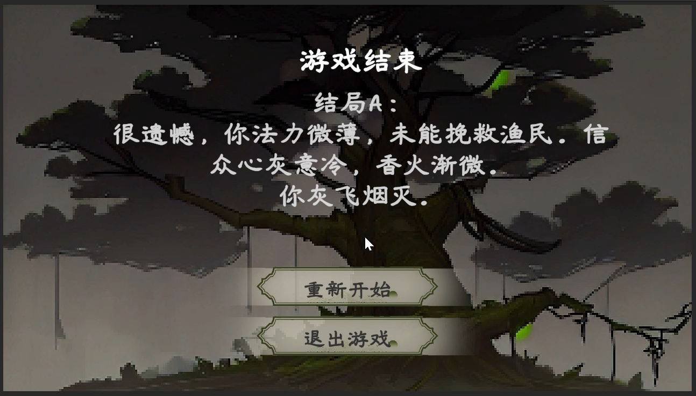